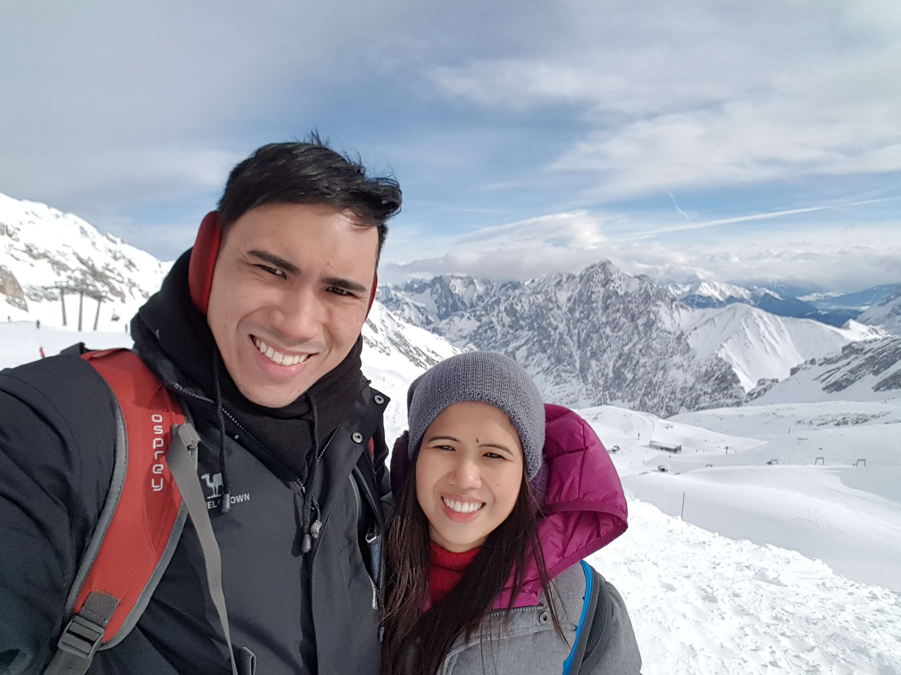

Hello. I´m Dennis Ilagan. I´m a self-taught web developer.
I work as a nurse for 12 years now. But as mush as I like to care for my patients, my first passion is really technology.
I found coding really cool and entertaining. That's why once I start studying web development since 12th October, 2023, I've never stop learning from it.
I enrolled myself in Udemy under the teaching of Angela Yu and it is great. And now, for under a week, I now learned the fundamentals of HTML.
Next Stop: CSS
18th October, 2023